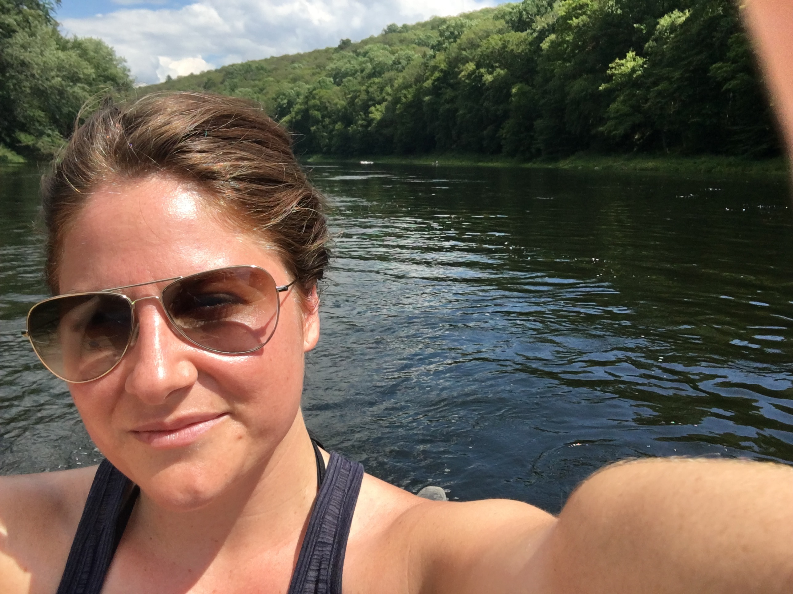

About Me

Hi! I'm Chiara! Nice to meet you :shakes virtual hand:
I am a New Jersey native and love my state, but after graduating from Rutgers-Newark, I decided it was time to see other places too. So, I moved to Portland, OR and ended up hanging out there for 3 years.
I came back to Jersey in 2013 to help my dad open an animal hospital. After working in the field since I was 15, it was a great opportunity for me to finally be "at the helm." While managing the animal hospital, I began to tinker with code. Little did I know that coding could bring my two favorite things together: language and organizing.
So, here I am: reading, and coding, and reading, and coding...
Connect with Me